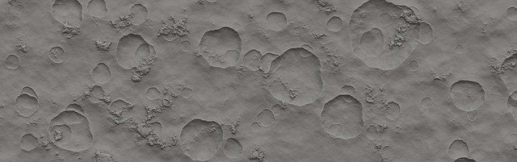

Holdkráterek

A Holdon több magyar vonatkozású kráter található. Mindegyik konkrét személy nevét viseli.
Magyar személyekről elnevezett holdkráterek
| Név |
Foglalkozás |
Kráter átmérője |
| Kármán |
mérnök |
210 km |
| Petzval |
mérnök |
150 km |
| Szilard |
fizikus |
147 km |
| Neumann
matematikus
107 km
| Eötvös
fizikus
105 km
A Hold rétegtana
A rétegtani egységek föntről lefelé:
- Kopernikuszi (fiatal, sugársávos kráterek),
- Eratoszthenészi (fiatal, de sugársáv nélküli kráterek),
- Imbriumi (az Imbrium-medence kialakulásától: kidobott takarók, mare elöntések),
- Nektári (a Nektár-medence kialakulásától: medencék, márék),
- Prenektári (minden korábbi kőzettest).
Források:
Hold – Wikipédia
Pixabay